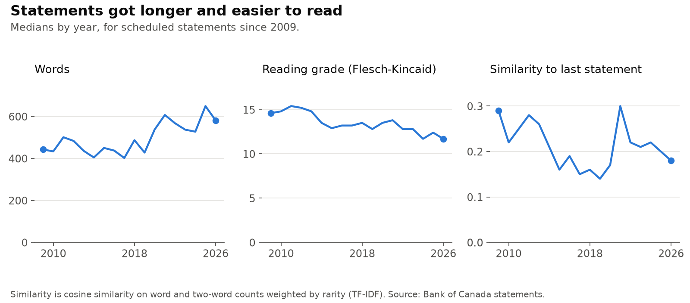
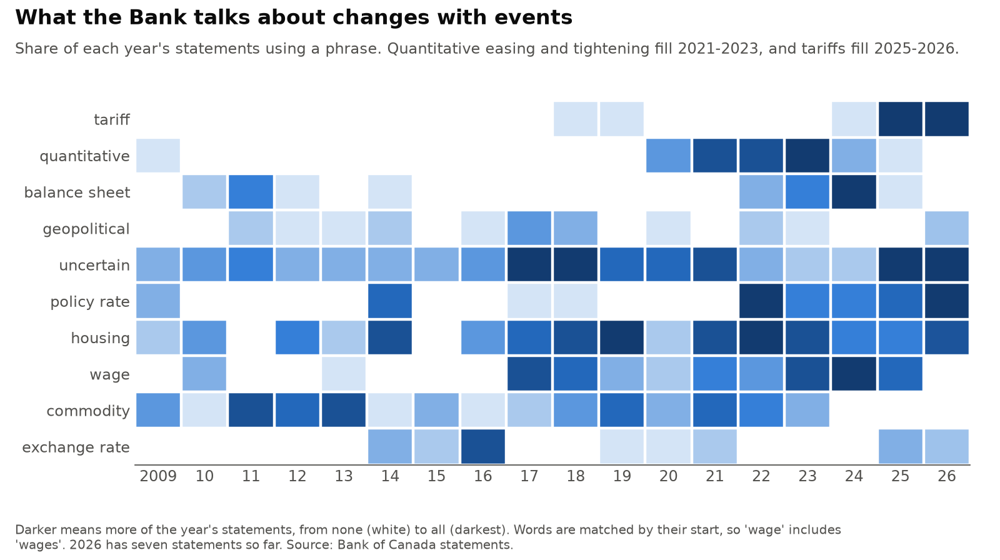
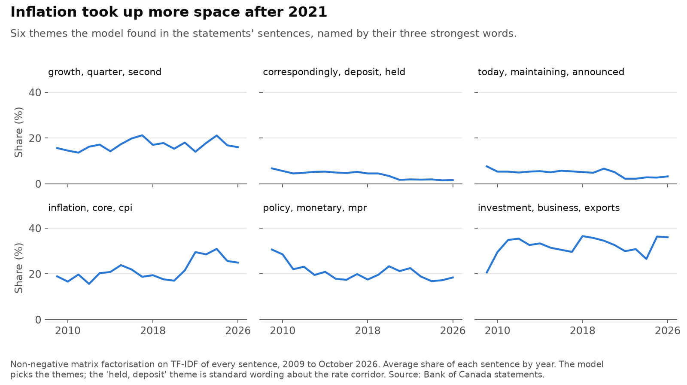
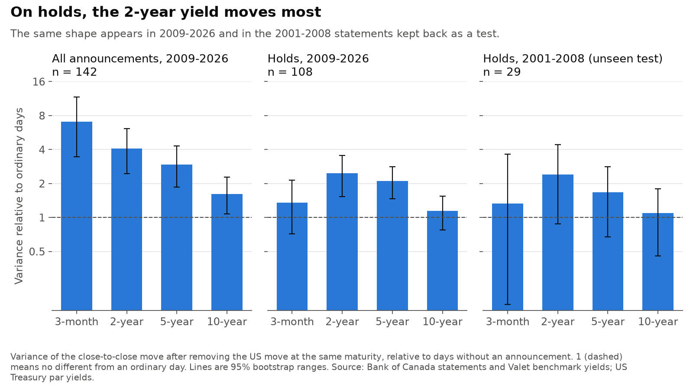
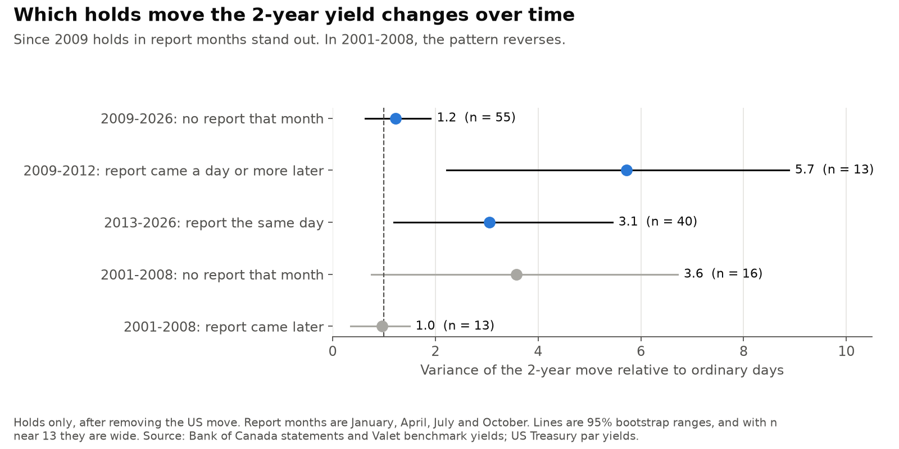
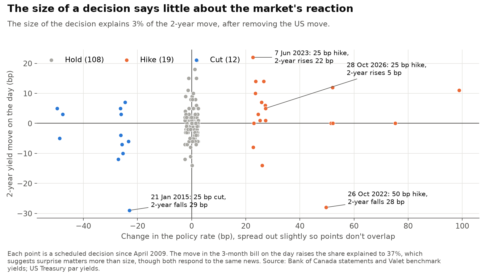

How the Bank of Canada's language changed, and when bond markets respond
The Bank of Canada has published a statement with each scheduled rate decision since 2001. This project reads all 207 of them to October 2026, tracks how the language has changed, and compares them with bond yield moves on the day. Results are as of November 2026.
Personal project: my own analysis of publicly available data. It is not associated with my work for any current or past employer and does not represent their views. It describes communication and markets. It is not investment advice, and it gives no trading signals, forecasts of decisions or verdicts on policy.
At a glance
| Question | Methods | Answer |
|---|---|---|
| How has the language changed? | Phrase counts, TF-IDF similarity, topic model, reading grade | Longer and easier to read: 444 median words and grade 14.6 in 2009, 581 and 11.7 in 2026. Topics follow events. |
| Which yields respond, and when? | Event study, US yield control, bootstrap | On holds, the 2-year moves most. That shape also appears in 2001-2008 statements kept back as a test. Which holds stand out changes over time. |
| How much is already priced in? | Regression on decision size, bill move, survey | Most of it. Decision size explains 3% of the 2-year move. |
| Does a change in wording line up with the reaction? | Fixed word list, placebo days, kept-back test, walk-forward | Not established. On holds, +0.08 in 2009-2026 and +0.35 in the 2001-2008 test, whose range includes zero. |
Ranges are 95%. A basis point (bp) is a hundredth of a percentage point.
1. How has the language changed?

Statements have grown from a median of 444 words in 2009 to 581 so far in 2026, with a high of 650 in 2025. The reading grade fell from 14.6 to 11.7, so they are longer but simpler.

Phrases follow events. Tariffs appear in every statement in 2025 and 2026. "Quantitative" appears in nearly all from 2021 to 2023 and fades after that.

A topic model finds six themes in the sentences. The inflation theme rises from about 18% of a statement's sentences in 2018-2019 to about 30% in 2022-2024.
2. Which yields respond, and when?

Across all announcements, the shorter the maturity, the bigger the response relative to an ordinary day: 7.0 times the variance for the 3-month bill and 1.6 times for the 10-year bond. Holds look different: the 3-month barely stands out (1.4), and the 2-year moves most (2.5, range 1.5 to 3.6). A hold says little about today's rate, so a response there is about the expected path of rates. The 2001-2008 statements show the same shape (1.3, 2.4, 1.7, 1.1), though their ranges are wide on 29 holds.

In the first look, holds with a Monetary Policy Report stood out and others didn't. That doesn't hold up as a general rule. Holds outside report months look ordinary since 2009 (1.2, range 0.6 to 1.9). Holds in report months stand out both when the report came out the same day (3.1) and in 2009-2012, when it came a day or more later (5.7), so the report's own publication isn't the whole story. In 2001-2008 the pattern reverses: holds outside report months have the larger ratio (3.6 against 1.0), with wide ranges.
3. How much is already priced in?

The size of a decision explains 3% of the 2-year move after removing the US move. A 50 bp hike on 26 October 2022 came with a 28 bp fall, and a 25 bp hike on 28 October 2026 came with a 5 bp rise. Adding the same day's move in the 3-month bill raises the share explained to 37%, which suggests that surprise matters more than size, though the two yields respond to the same news.
The Bank's Market Participants Survey gives another view of expectations. The median in the latest survey matched the actual rate at 18 of 30 meetings since 2023, and the gap between survey and outcome doesn't line up with the 2-year move (+0.09, range −0.27 to +0.45). The survey is quarterly and often months old by the meeting, so this is a weak measure of surprise.
4. Does a change in wording line up with the reaction?
The test is on holds, where the decision itself is no news. The tone score counts direction words in sentences about the economy, from a list fixed before any yields were joined. I kept the 2001-2008 statements back and committed the plan before testing them.
Hover or tap a dot for its statement. Moves leave out the part explained by the US 2-year yield. Higher tone means more words about rising prices and activity. Ranges are 95%.
| Holds | Rank correlation | Status |
|---|---|---|
| 2009-2026, on the day | +0.08 (−0.10 to +0.26), n = 108 | Looked at first |
| 2009-2026, the day before (placebo) | −0.17 (−0.36 to +0.01) | Larger in size than the real result |
| 2001-2008, on the day | +0.35 (−0.03 to +0.65), n = 29 | Kept back and tested after the plan was committed |
| 2001-2008, the day before and after (placebos) | −0.24 and −0.20, with wide ranges | Kept-back test |
| 2018-2026, on the day | +0.33 (+0.05 to +0.58), n = 46 | Found after seeing the full result, so a lead only |
| 2009-2017, on the day | −0.10 (−0.32 to +0.13), n = 62 | Found after seeing the full result |
The plan said the idea would be supported only if the kept-back result had a range excluding zero and clearly smaller placebos. It missed on the range, so the answer is "not established". It may be real in some periods, but these data can't show it.
A model that learns from the words themselves shows the risk. With more words than events, TF-IDF ridge regression gets an R² of 0.99 on past holds and −0.17 on later ones, worse than guessing the average. I left out a sentence classifier, because its labels would need someone other than the author of the test.
Why daily data limits this
Free yield data is daily, and I found no openly licensed intraday source. A close-to-close window holds more than the statement: the Monetary Policy Report and press conference, data releases, and Fed decisions, which fell on the same day as 9 of the last 15 announcements.
The US 2-year yield explains about half of the Canadian 2-year's daily variance on ordinary days, so it is removed, but that control is imperfect. Daily data can compare groups of days. It can't credit one move to one statement. The median hold moves 2.0 bp against 1.3 bp on an ordinary day, and 5 holds out of 108 make up 42% of the squared moves.
Other limits
- Few events: 108 holds since 2009 with yield data and 29 before. New statements arrive at eight a year.
- Wording and yields may both respond to the same news, so these are associations.
- A list fixed today may not suit 2005 or 2015 equally. That may explain the different results by period, but this project can't test it.
- With this many comparisons, some ranges will exclude zero by chance.
- Short yields had little room to move in 2009-10 and 2020-21.
- Yields are quoted to 1 bp, close to a typical move. Benchmark bonds change over time, which may create small jumps, and US and Canadian closes differ in time.
- Unscheduled moves, such as March 2020, are left out.
Data
Bank of Canada rate statements, with page formatting and the closing information note removed; Valet benchmark bond and Treasury bill yields (sources: CanDeal Data and Analytics and the Bank of Canada), target rate and USD/CAD; Market Participants Survey; US Treasury par yields; Federal Reserve meeting calendars. Yield levels aren't republished, only moves on announcement days and summaries.
This work uses Bank of Canada content but isn't endorsed by the Bank.